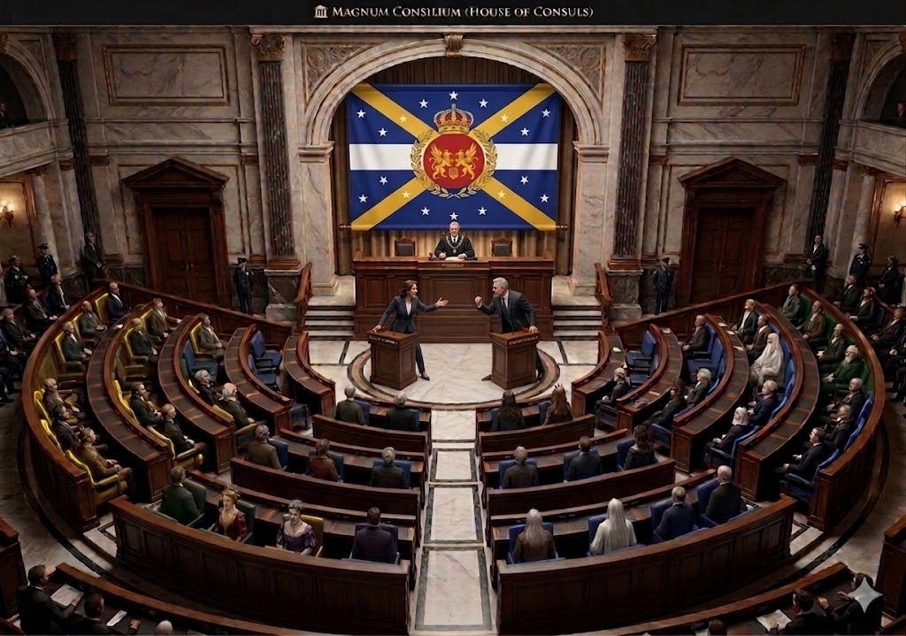

THE MAGNUM CONSILIUM
The Magnum Consilium, also known as the Upper House of Consuls, is the senior chamber of the bicameral Imperial Assembly of Bristevia.
It represents the provincial interests of the Empire and serves as a critical check and balance within the Imperial Sovereign of Bristevia (ISB).
Composition and Membership
- The house consists of exactly 30 Consuls.
- Each of the Empire's 30 provinces is represented by exactly one Consul.
- Consuls are elective officials chosen through direct elections by the people of their respective provinces.
- The number of Consuls may increase if the Imperial Assembly creates additional provinces.
Historical Evolution
The modern chamber was formalized under the reforms of Souverion Stephen XXV, replacing semi-independent aristocratic and noble councils with a structured house of provincial representatives designed to ensure absolute centralization.
Its historical roots can also be traced to the Valloré system of Era 5, particularly its consul-based administration, which served as a bridge between imperial authority and local governance.
LEADERSHIP OF THE HOUSE
CHAIRMAN OF THE MAGNUM CONSILIUM
John Maynard Keynes serves as Chairman of the Magnum Consilium and represents the province of Jaybrienne.
Although elected as a member of the Conservative Party, the Chairman serves in an independent capacity.
The Chairman-designate must take a solemn oath before the Chief Justice of the Supreme Tribunal and the Associate Justices before assuming the chair.
The Chairman is also tasked with ensuring legal and philosophical symmetry across the provinces and overseeing structural governance reviews.
LEGISLATIVE AND FISCAL POWERS
Law-Making
The Magnum Consilium participates in the legislative process and may propose or concur with amendments to legislation originating in the Domus Curialum.
Three Readings
All bills must pass three readings on separate days within the house.
Conference Committee
When the two Houses approve differing versions of a bill, a joint Conference Committee is formed to reconcile the differences.
Fiscal Oversight
Appropriation, revenue, tariff, and debt-related decrees originate exclusively in the Domus Curialum, while the Magnum Consilium retains amendment and concurrence powers.
Emergency Fiscal Measures
Emergency fiscal measures enacted by the Prime Minister beyond an initial six-month period require the concurrence of the Magnum Consilium.
Parliamentary Self-Regulation
The House determines its own rules of proceedings and exercises internal disciplinary authority.
SOLE AUTHORITY IN IMPEACHMENT
The Magnum Consilium holds the exclusive power to try and decide all cases of impeachment initiated by the Domus Curialum.
Impeachable Officers
Its jurisdiction extends to high officials of the Realm, including:
- The Prime Minister
- Justices of the Supreme Tribunal
- Imperial Ministers
- The Speaker of the House
- Provincial Governors
Trial Procedure
When the Prime Minister is on trial, the Chief Justice of the Supreme Tribunal presides over the Magnum Consilium but does not vote.
Conviction Requirement
COMMISSION ON APPOINTMENTS
The Magnum Consilium plays a vital role in confirming the Realm's key officials through the Commission on Appointments.
Composition
- Chairman of the Magnum Consilium — ex officio Chairman
- Twelve Consuls
- Twelve Ministers from the Domus Curialum
Mandate
The Commission acts upon and confirms nominations for key officials of the Realm, including Ministers of the Crown, Ambassadors, and other officials subject to constitutional confirmation.
Representation of Consuls in the Commission follows proportional representation based upon their registered political parties.
ACCOUNTABILITY AND DISCIPLINE
Internal Discipline
The House may determine its own rules of proceedings and, by a two-thirds vote, may suspend or expel a member for disorderly conduct.
A member may be suspended for up to 60 days or expelled entirely, subject to the constitutional requirements of the House.
Oath of Fealty
Members are bound by a parliamentary oath of fealty to the 2026 Constitution and the Sovereigns of Bristevia.
Violation of this trust may result in administrative termination or expulsion in accordance with the Constitution and the rules of the House.
CONSTITUTIONAL CONTEXT
The Magnum Consilium is a cornerstone of the Bristevian legislative system. It represents the specific interests of the Empire's provinces while serving as the Realm's highest trial forum for political offenses through its impeachment jurisdiction.
Judicial Validation
Following every election, the roster of the Magnum Consilium, except for the Chairman, must be submitted to and approved by the Supreme Tribunal to ensure that no electoral violations occurred before the elected Consuls assume office.
Political Party Registration
All political parties must be registered with the Commission on Imperial Elections.
Registered political organizations include the Green, Liberal, Democratic, Republican, National Unity, Progressive Alliance, Socialist, Communist, Centrist, Labor, Conservative, Radical, and Independent blocs.
OFFICIAL ROSTER OF THE HOUSE OF CONSULS
The Magnum Consilium consists of exactly 30 elected Consuls, with one representative from each province of the Empire. The following roster reflects the 2026 election.
| # | PROVINCE | CONSUL | POLITICAL PARTY |
|---|---|---|---|
| 1 | Stephara | Prime Minister Otto von Bismarck | Conservative |
| 2 | Jaybrienne | Chairman John Maynard Keynes | Conservative |
| 3 | Orlencia | Jean-Jacques Rousseau | Liberal |
| 4 | Westrion | George Washington | Conservative |
| 5 | Costria | Horatio Nelson | National Unity |
| 6 | Ronjiel | John Stuart Mill | Liberal |
| 7 | Virelion | Daniel O'Connell | Liberal |
| 8 | Draxenor | Vlad the Impaler | Conservative |
| 9 | Falrion | Alexander the Great | Conservative |
| 10 | Regalith | Marquis de Lafayette | Liberal |
| 11 | Northaven | Fridtjof Nansen | Conservative |
| 12 | Montelune | Artemis | Conservative |
| 13 | Basilion | Justinian I | Conservative |
| 14 | Aethelburg | William Morris | Conservative |
| 15 | Sylvaren | John Muir | Green |
| 16 | Jaeyara | Catherine de' Medici | Conservative |
| 17 | Andriel | Archangel Michael | Conservative |
| 18 | Orinthal | George Orwell | Conservative |
| 19 | Eastria | Dowager Cixi | Conservative |
| 20 | Luminaris | Nikola Tesla | Progressive Alliance |
| 21 | Aurelthia | Queen Elizabeth I | National Unity |
| 22 | Eldrosia | Saruman the White | Conservative |
| 23 | Gravenor | William the Conqueror | Conservative |
| 24 | Aquaris | Neptune | National Unity |
| 25 | Southmere | James Cook | Liberal |
| 26 | Starella | Wernher von Braun | Liberal |
| 27 | Solara | Voltaire | Liberal |
| 28 | Velandor | Celeborn | Conservative |
| 29 | Britonvale | Arthur Wellesley | Conservative |
| 30 | Gabrielis | Martial Ney | Progressive Alliance |
CURRENT POLITICAL COMPOSITION
Following the 2026 election, the Conservative Party holds the largest bloc in the Magnum Consilium, with 19 of the 30 Consuls.
The chamber also includes representatives from the Liberal, National Unity, Green, and Progressive Alliance blocs, requiring legislative deliberation across multiple political groupings.
THE ROLE OF THE MAGNUM CONSILIUM
The Magnum Consilium stands as one of the principal constitutional institutions of the Imperial Sovereign of Bristevia.
Through its representation of the Empire's provinces, participation in legislation, fiscal oversight, appointment confirmation, internal discipline, and exclusive impeachment jurisdiction, the Upper House serves as a principal institutional check within the Bristevian system of government.
Thirty Provinces. Thirty Consuls. One Imperial Assembly.